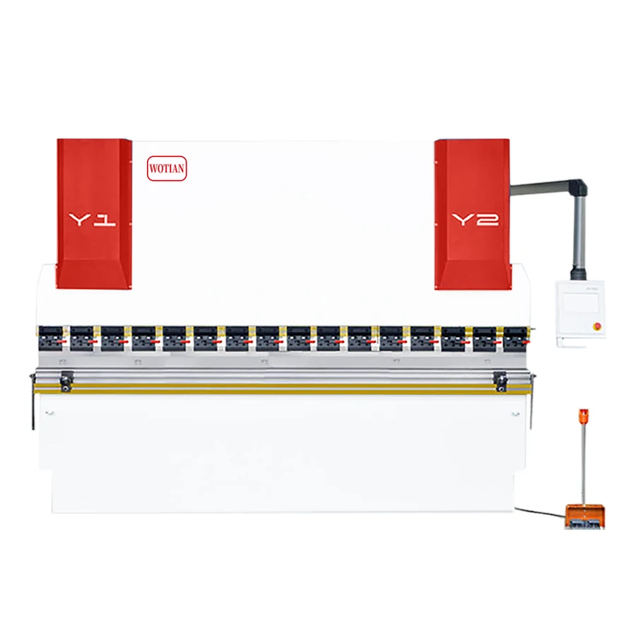
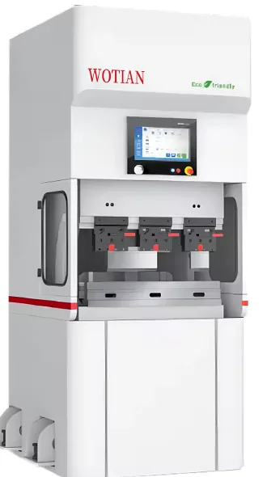
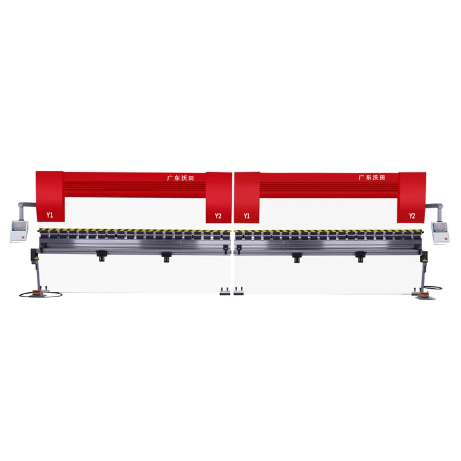
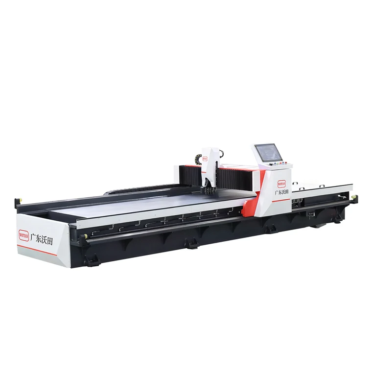
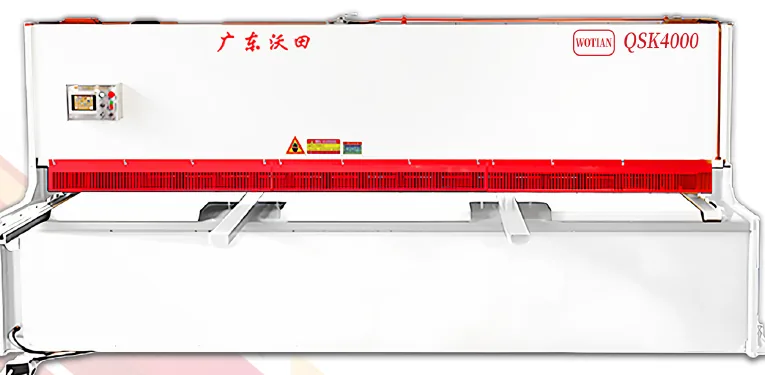
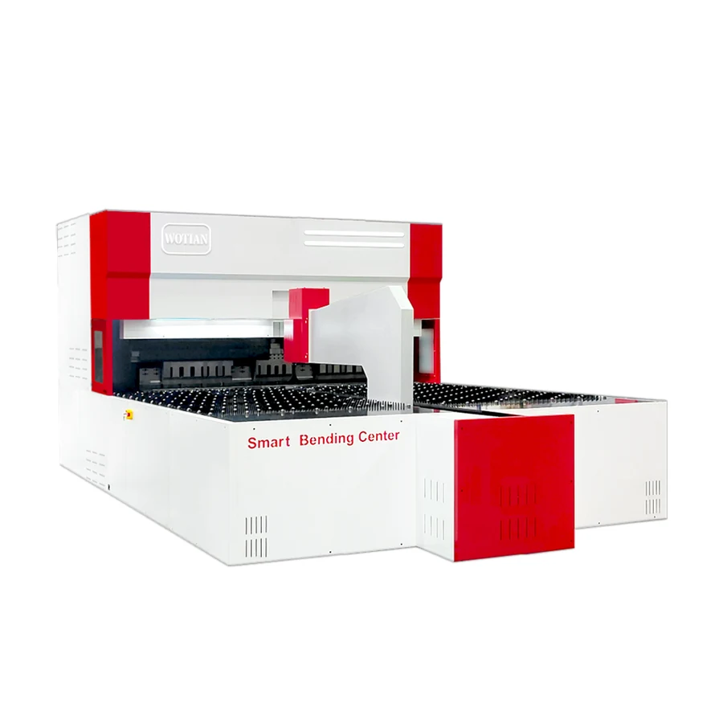
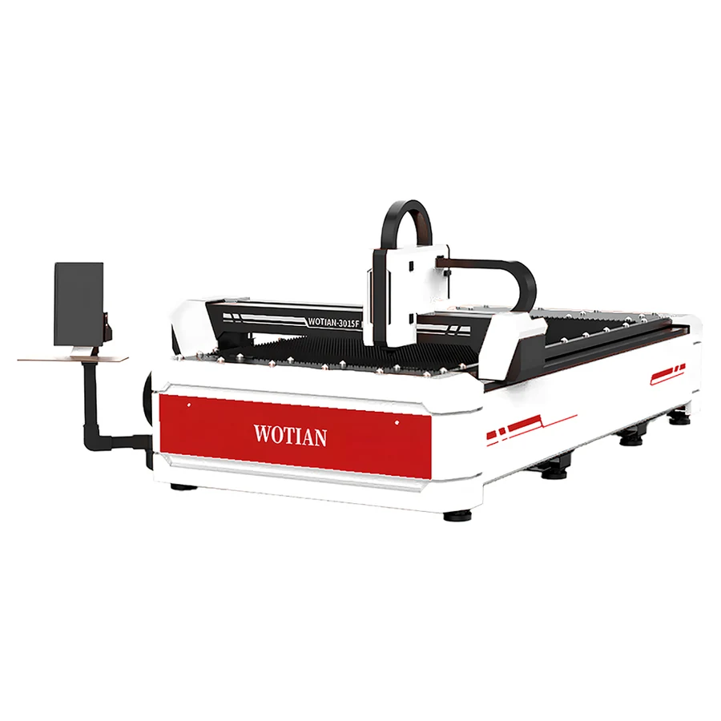

WE67K Series
DHK Electro-Hydraulic Hybrid Servo CNC Press Brake
High-precision CNC bending for export sheet-metal workshops that need repeatable angles, multi-axis control, and stable production.
View landing pageCompare WOTIAN product families by application, investment level, accuracy requirement, and production workflow.
High-precision CNC bending for export sheet-metal workshops that need repeatable angles, multi-axis control, and stable production.
View landing page
A practical hydraulic press brake for buyers who need reliable bending capacity, simple operation, and lower investment cost.
View landing page
Compact all-electric bending for precise small and medium parts, clean workshops, and energy-conscious production lines.
View landing page
Synchronized tandem bending for extra-long workpieces, with the flexibility to run two machines together or separately.
View landing page
CNC V-grooving equipment for sharp bends, decorative sheet-metal surfaces, and reduced bending load before forming.
View landing page
Hydraulic guillotine and swing-beam shears for reliable sheet cutting before bending, welding, and forming.
View landing page
Intelligent panel bending centers for high-efficiency box, panel, cabinet, and complex sheet-metal forming.
View landing page
Fiber laser cutting equipment for clean, burr-free cutting of carbon steel, stainless steel, aluminum, and copper sheets.
View landing pageWOTIAN can quote standard models or customized configurations for overseas distributors, manufacturers, and project buyers.
Yes. The catalog states special model customization is available. Buyers can request tonnage, bending length, control system, tooling, voltage, color, and packaging options.
Send material type, thickness, sheet length, target products, daily output, required accuracy, destination country, and any preferred controller or tooling brand.
Yes. The site highlights export packaging, machine protection, documentation support, and shipment coordination for overseas buyers.
Choose CNC press brakes for higher accuracy and repeatability, NC press brakes for economical general bending, electric servo models for clean compact precision work, and tandem machines for extra-long parts.
Yes. Voltage, controller language, safety configuration, tooling, and machine color can be discussed before production.
Yes. OEM support is available for distributors and project buyers who need customized appearance, nameplates, or market-specific configuration.
Send the material, thickness, working length, product drawing or photo, destination country, and target quantity. WOTIAN can recommend a suitable model and quotation scope.
WOTIAN can support overseas buyers with operation guidance, machine documentation, remote communication, and preparation details before shipment.